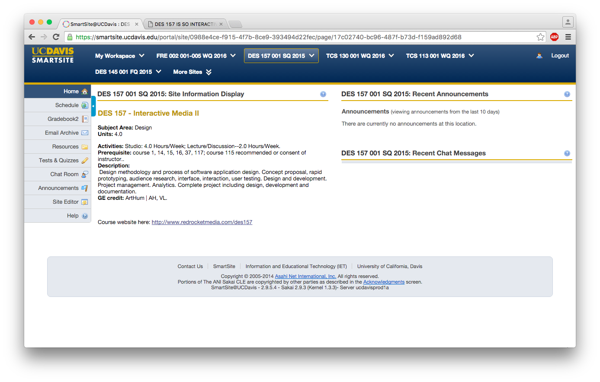

January 7, 2016
An interface that I frequently use is the smartsite for UC Davis. An aspect of the design for the website interface that I found to be quite effective is that the navigation is very clear. The menus stay in the same place regardless of the page that is being visited, and this is appealing as it does not confuse the user. I also appreciate the responsive design that makes the content quite fluid, such as the top blue menu that expands down to fit the sections if the browser is made smaller. The side menu changes content depending on the class that has been selected at the top. Visually, I think the type hierarchy is working well and each section has its own space. I personally feel that the overall look could be made more appealing with better color choices and shapes, and maybe even some motion graphics. However, I think the current colors convey a professional sense to the user, and the interface serves the functional purpose of an organizational website for communication between students and teachers.
